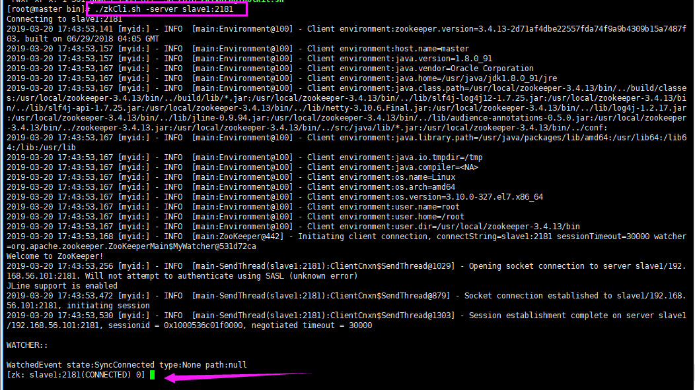
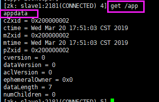
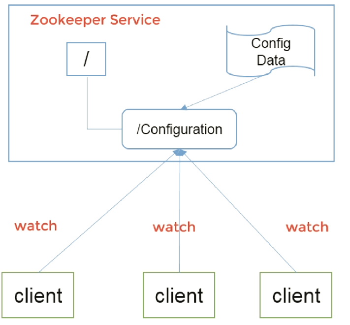
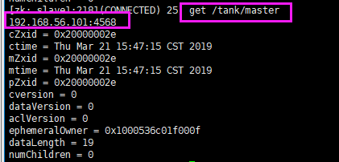
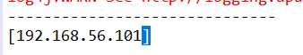
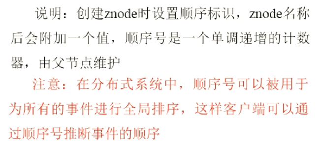
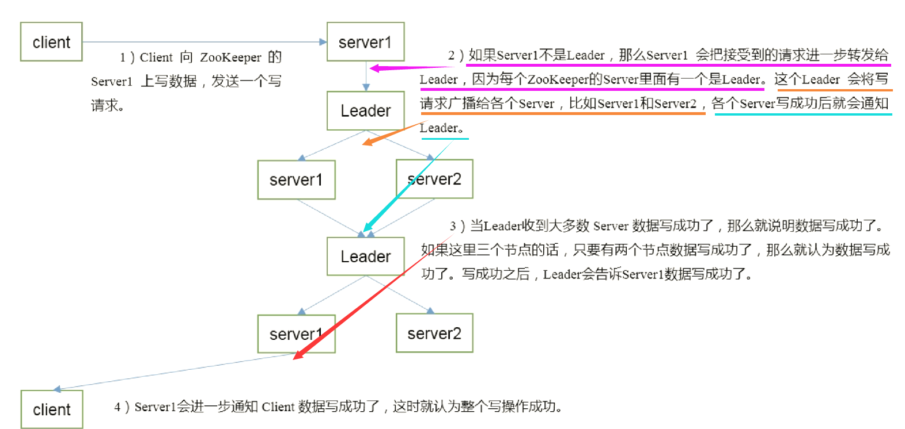

Zookeeper入门 - 追加
参考：马士兵 - Zookeeper、尚硅谷的
制作日期：2019-03-19 - 2019-03-21 | 2019-06-12 -
制作人：小邹[yw_forgit@163.com]
最好是有前面Hadoop这些知识，当然没有也可以。预备知识：Linux基础、Java编程基础。
目标：学完今天就会开发分布式程序了，不是用，而是开发。
1、Zookeeper是什么、有什么用
Zookeeper核心
Zookeeper核心：一致、有头、数据树。
Hadoop这些分布式的程序都是以这个为基础的，Zookeeper是开发其他分布式程序的API或者lib，不算一个完整的产品。
1）解决分布式系统数据一致性的问题。
2）协调一堆动物，Zookeeper的意思就是动物园管理者。比如协调hadoop、impala、shark、hive、mahout等。
Google的三篇论文
GFS（Google File System） -- 延伸为 --> HDFS
BigTable -- 延伸为 --> HBase（以前用MySQL的，现在是把MySQL的一部分功能抽出来用HBase替代）
MapReduce -- 延伸为 --> HadoopMapReduce
Google公开了这三篇论文，才有了分布式的大发展。
SpringCloud功能比Dubbo多，但是Dubbo经过阿里的检验，应该性能比SpringCloud高。
Zookeeper工作机制
如下图，服务器启动就去zk注册，即创建临时节点，客户端从zk监听临时节点的变化，只要服务器挂了（停机或者退出连接zk都算），临时节点就会消失，此时就会通知客户端，哪个临时节点没了（即哪个服务器挂了），以后客户端就不访问那个服务器了。需要注意的，这里的服务器、客户端访问了zk，对于zk来说，他们都是Client，而当客户端访问服务器的时候，就不需要经过zk了。
所以Zk = 文件系统（创建节点等） + 通知机制（注册、监听）
Zookeeper的特点
数据结构
2、安装、配置、启动、监控等
下载安装
官网下载
启动了四台虚拟机，以前作为Hadoop集群的，所有才有了master、slave1、2、3这种命名。现在slave1、2、3作为Zookeeper（zk）的集群，master作为一个连接zk集群的客户端。
分别给三台zk集群上传tar.gz安装包
三台机器都解压
解压完毕，进入目录看一下
配置
zoo.cfg
进入conf目录
复制zoo_sample.cfg为zoo.cfg，然后编辑
了解一下，特别是2181端口，后面会用到。dataDir目录默认是临时目录，可以改为自己创建的目录。
（注意，dataDir目录要修改，不要放/tmp，当时没管，导致后面/tmp的myid文件丢失了）
参数解读
三台集群同时对外提供服务的，所以要告诉每一台机器，集群里头有哪些机器，配置如下图。ip就是这三台机器的ip，而ip后面要指定两个端口，2888是leader机器与其他flower机器通讯的端口号，3888是选举leader用的端口。
注意id号不要重复了，复制容易出错，比如我之前的配置
否则查看状态会是单机版，本应该是leader或flower的。注意，这时重新配置之后，myid也要重新配置。
myid
进入/tmp/目录，创建zookeeper目录，新建myid文件
（注意，dataDir目录要修改，不要放/tmp，所以myid文件就不能放/tmp目录）
zoo.cfg配置文件写着server.1+ip代表着该ip的机器的myid就是1，所以其他两个的myid分别是2、3。myid的意思是告诉zk，我自己在zk集群中的id是多少。
启动
进入zk的bin目录，启动zk
停止zk服务的命令是 ./zkServer.sh stop
等待一会，然后都jps，看到QuorumPeerMain表示启动了
监控
启动之后，在bin目录下，有个out文件就是日志文件
查看状态，可以发现其中有一个是leader
建议用奇数的集群，zk的存储的数据量不大，主要数据都在内存里，硬盘只是辅助，据阿里说给dubbo做的zk是100多台。zk是很多台机器对外提供服务，但有一个哥们是老大，其他都是跟随者。
模拟宕机
模拟leader宕机，杀死leader之后，可以看到又自动选举了一个leader。
Zookeeper配置集群的要求最少要3台，而且最好是奇数台集群，3台机器挂了一台还能运行，并且重新选举leader，但是如果3台挂了两台，这就挂的集群超过了总集群的一半，那整个Zookeeper就挂了，这是zk的算法决定的。
Zookeeper是棵数据树
如下图，数据树就是有很多节点，像一棵树，每个节点都有数据。
所有的请求都先来到leader这里，leader在转发给其他人。
客户端连接zk集群
用master作为客户端，同样上传tar.gz包，解压缩
进入bin目录
连接集群。使用zkCli.sh连接，不管连接哪台服务数据都是一样的，slave1是ip为101的机子，hosts文件有配置，而2181端口就是前面配置文件看到的那个clientPost，即客户端连接集群的端口。（启动之前模拟宕机的机子，启动之后会自动拉取数据，保持数据一致）

敲help，可以看到很多命令
列举根目录，zookeeper是默认的节点，存zk自己的数据
ls2 /
创建/app这个节点，后面跟着的是这个节点挂着的数据，什么类型都可以，存储是用byte自己数据来存的
获取节点绑定的数据

在节点上创建节点
重新绑定节点的数据
创建临时节点，然后退出该客户端（不再连接zk）
然后再重新连接zk，进来发现临时节点被删除了
创建有序号的临时节点
监听
在其中一台zk机器上监听（叫104），监听 /sanguo节点的值的变化
在另一台zk机器上（叫103）设置一下 /sanguo节点的值
然后就会看到104监听到了节点的数据有变化，需要注意的是，监听一下，只有一次有效，下次需要重新监听
监听节点的子节点的变化（路径变化），先监听

另一个机子创建子节点
可以看到103监听到了子节点的变化
zookeeper就是一个数据库，只是数据存在内存中。
3、应用场景
1）统一命名服务
2）统一配置管理
详细版：

3）统一集群管理
4）服务器动态上下线
5）HA
HA是High Available缩写，是双机集群系统简称，指高可用性集群，是保证业务连续性的有效解决方案，一般有两个或两个以上的节点，且分为活动节点及备用节点。
后面就是用Java写这个例子，下图这些流程都是要自己动手写代码实现的。
6）软负载均衡
…
4、Java API
zk还提供了API，使用这些API可以往zk存数据，读的速度很快，写的时候因为要保持数据一致，所以会锁定其他机器，会慢一点。每次写数据都会先往日志里面写，然后才写入数据，这样可以在日志里面恢复数据。
1）临时节点
EPHEMERAL就是临时节点，创建该节点的机子宕机，该节点也会消失。
代码
创建Maven项目

添加依赖
|
<dependencies> <dependency> <groupId>org.apache.zookeeper</groupId> <artifactId>zookeeper</artifactId> <version>3.4.13</version> </dependency> </dependencies> |
|
import
java.io.IOException; import
java.util.concurrent.CountDownLatch; import
org.apache.zookeeper.CreateMode; import
org.apache.zookeeper.KeeperException; import
org.apache.zookeeper.WatchedEvent; import
org.apache.zookeeper.Watcher; import
org.apache.zookeeper.ZooKeeper; import
org.apache.zookeeper.Watcher.Event.KeeperState; import
org.apache.zookeeper.ZooDefs.Ids; // Watcher是zk的监听器，实现process方法， public class ZkClient implements Watcher { // 高并发编程的门闩 static
CountDownLatch connected = new
CountDownLatch(1); static final String CONNECTION = "192.168.56.101:2181,
192.168.56.102:2181, 192.168.56.103:2181"; public static void
main(String[] args) throws IOException,
InterruptedException, KeeperException { new
ZkClient().test(); } public void test() throws IOException,
InterruptedException, KeeperException { // 这是异步连接。5000是超时时间；this是传递一个监听器，监听器要实现Watcher接口，这是观察者，由于是异步连接，什么时候连上要通过观察者来看， ZooKeeper
zk = new ZooKeeper(CONNECTION, 5000, this); System.out.println("连接状态=" + zk.getState()); // 在这里等待门闩开，门闩开，代码才会往下执行。 connected.await(); // 如果存在这个节点就删除 if(zk.exists("/tank/master", false) != null) { zk.delete("/tank/master", -1); } // 创建节点。"This
is data".getBytes()是节点的数据；Ids.OPEN_ACL_UNSAFE表示不做权限检查；
CreateMode.EPHEMERAL是临时节点（主备切换用这个），还有一个CreateMode.PERSISTENT是永久节点。 // 注意，要先创建/tank节点，否则报错org.apache.zookeeper.KeeperException$NoNodeException:
KeeperErrorCode = NoNode for /tank/master zk.create("/tank/master", "This
is data".getBytes(), Ids.OPEN_ACL_UNSAFE, CreateMode.EPHEMERAL); System.out.println("创建节点成功"); byte[] data = zk.getData("/tank/master", false, null); System.out.println("获取节点数据=" + new String(data)); // 睡一下，为了查看结果 Thread.sleep(10000); zk.close(); } // 监听器会传递监听事件 public void
process(WatchedEvent event) { System.out.println("事件:" + event); // 如果是已经连接的状态，就开门闩 if(event.getState()
== KeeperState.SyncConnected) { // 门闩减少为0，即开门闩 connected.countDown(); System.out.println("已经连接!"); } } } |
测试
在master虚拟机创建/tank节点
执行程序
执行之后，等待连接成功，然后立马执行 ls /tank ，可以看到master节点，等待10秒之后，再执行，节点就没有了。
2）HA的开发
前面说的HA（主备自动切换），现在写代码实现部分功能
代码
pom.xml与之前的一样
|
import
java.io.IOException; import
java.util.Arrays; import
java.util.List; import
java.util.concurrent.CountDownLatch; import
org.apache.zookeeper.CreateMode; import
org.apache.zookeeper.KeeperException; import
org.apache.zookeeper.WatchedEvent; import
org.apache.zookeeper.Watcher; import
org.apache.zookeeper.Watcher.Event.EventType; import
org.apache.zookeeper.Watcher.Event.KeeperState; import
org.apache.zookeeper.ZooDefs.Ids; import
org.apache.zookeeper.ZooKeeper; public class ZkTankMaster
{ // 已连接的门闩 static
CountDownLatch connected = new
CountDownLatch(1); // 断开的门闩 static
CountDownLatch disconnected = new
CountDownLatch(1); // zk集群ip static final String CONNECTION = "192.168.56.101:2181,
192.168.56.102:2181, 192.168.56.103:2181"; // 客户端的ip+端口 static final
List<String> IP_PORT = Arrays.asList("192.168.56.100:4567", "192.168.56.101:4568"); public static void
main(String[] args) throws IOException,
InterruptedException, KeeperException { new
ZkTankMaster().test(); } public void test() throws IOException,
InterruptedException, KeeperException { // 这是异步连接。5000是超时时间；this是传递一个监听器，监听器要实现Watcher接口，这是观察者，由于是异步连接，什么时候连上要通过观察者来看， ZooKeeper
zk = new ZooKeeper(CONNECTION, 5000, new
MasterWatch()); System.out.println("连接状态=" + zk.getState()); // 在这里等待connected门闩开，门闩开，代码才会往下执行。 connected.await(); // 如果存在这个节点。new
MasterWatch()是在监听这个节点的监听器 if(zk.exists("/tank/master", new
MasterWatch()) != null) { // >>
来到这里就是备用机 System.out.println("备用机监听主用机的节点"); // 停在这里，等待disconnected门闩。主用机宕机之后，备用机接收到断开的事件之后，触发disconnected门闩打开 disconnected.await(); zk.create("/tank/master", IP_PORT.get(1).getBytes(),
Ids.OPEN_ACL_UNSAFE, CreateMode.EPHEMERAL); System.out.println("备用机替代主用机，并且创建节点"); } else { // >>
来到这里就是主用机。 System.out.println("主用机已经创建节点"); // 创建节点。xxx.getBytes()是节点的数据；Ids.OPEN_ACL_UNSAFE表示不做权限检查；
CreateMode.EPHEMERAL是临时节点（主备切换用这个），.PERSISTENT是永久节点。 zk.create("/tank/master", IP_PORT.get(0).getBytes(),
Ids.OPEN_ACL_UNSAFE, CreateMode.EPHEMERAL); } // 睡很久，模拟服务器一直在运行 Thread.sleep(Integer.MAX_VALUE); } // Watcher是zk的监听器，实现process方法 class MasterWatch implements Watcher { // 监听器会传递监听事件 public void
process(WatchedEvent event) { System.out.println("事件:" + event); // 如果是已经连接的状态，就开门闩 if(event.getState()
== KeeperState.SyncConnected) { // 门闩减少为0，即开门闩 connected.countDown(); System.out.println("已经连上zk!"); } /** 注意，这里的两个if要分开写，不能用else if来写，打印事件信息得到 -- 事件:WatchedEvent
state:SyncConnected type:NodeDeleted path:/tank/master * 从事件信息可以看到state:SyncConnected和type:NodeDeleted是同时存在的，所以上下两个if语句不能合并。 */ // 如果是节点删除事件（连接事件与节点事件公用监听器），则触发disconnected门闩打开。注意不是用event.getState()
== KeeperState.Disconnected if(event.getType() ==
EventType.NodeDeleted) { System.out.println("已删除的节点路径=" + event.getPath()); // 如果删除的节点是主机挂的节点 if("/tank/master".equals(event.getPath()))
{ disconnected.countDown(); System.out.println("主用机已挂"); } } } } } |
测试
开两个日志窗口，先启动一个程序，作为主用机，等待创建节点完成，再启动第二个程序（同一份代码），作为备用机
然后去master虚拟机执行命名查看节点的数据，可以看到是100ip、4567端口
然后停掉主用机，等待一会，可以看到备用机顶上来了
再获取一下节点数据，变成了备用机的ip端口了

然后再启动一个程序（相当于重启宕机的主用机），此时就是备用机了（左边的），右边的是备用机变成了主用机
然后停掉右边的主用机，原来宕机的主用机的备用机又变成了主用机。
就是这样实现了主备自动切换，而客户端只需要根据节点的数据的ip、端口，连接对应的服务器即可。
3）服务器动态上下线案例
记得启动zk集群
代码
pom.xml不变
DistributeServer
|
package
_02; import
java.io.IOException; import
org.apache.zookeeper.CreateMode; import
org.apache.zookeeper.KeeperException; import org.apache.zookeeper.WatchedEvent; import org.apache.zookeeper.Watcher; import
org.apache.zookeeper.ZooDefs.Ids; import
org.apache.zookeeper.ZooKeeper; public class DistributeServer { public static void main(String[] args) throws Exception { DistributeServer server = new DistributeServer(); // 1、连接Zookeeper集群 server.getConnect(); // 睡一下，等待连接（不然，还没有获取到连接，就操作了会报错） Thread.sleep(5000); // 2、注册节点（创建临时节点） server.register(args[0]); // 3、业务逻辑 处理 Thread.sleep(Integer.MAX_VALUE);
// 模拟处理业务逻辑，防止程序退出 } // zk集群 private String connectString = "192.168.56.101:2181,
192.168.56.102:2181, 192.168.56.103:2181"; // 超时时间 private int sessionTimeout = 5000; // 服务器对于zk来说，也是Client private ZooKeeper zkClient; private void getConnect() throws IOException { // 最后一个参数为null，表示不监听，而服务器也不需要监听，对比一下客户端的 zkClient = new ZooKeeper(connectString , sessionTimeout, null); } private void register(String hostname) throws KeeperException, InterruptedException { // hostname.getBytes()=节点的内容是主机名； EPHEMERAL_SEQUENTIAL=临时的带序号的节点，可以多次创建（最终的结果是/serverList/server1+一串序号） zkClient.create("/serverList/server1", hostname.getBytes(), Ids.OPEN_ACL_UNSAFE, CreateMode.EPHEMERAL_SEQUENTIAL); System.out.println("created!"); } } |
DistributeClient
|
package
_02; import
java.io.IOException; import
java.util.ArrayList; import
java.util.List; import
org.apache.zookeeper.KeeperException; import
org.apache.zookeeper.WatchedEvent; import
org.apache.zookeeper.Watcher; import
org.apache.zookeeper.ZooKeeper; public class DistributeClient { public static void main(String[] args) throws Exception { DistributeClient client = new DistributeClient(); // 1、连接Zookeeper集群 client.getConnect(); // 睡一下，等待连接（不然，还没有获取到连接，就操作了会报错） Thread.sleep(5000); // 2、获取子节点并监听其数据变化 client.getChildrenAndWatch(); Thread.sleep(Integer.MAX_VALUE); } // zk集群 private String connectString = "192.168.56.101:2181,
192.168.56.102:2181, 192.168.56.103:2181"; // 超时时间 private int sessionTimeout = 5000; // 对于zk来说，是Client private ZooKeeper zkClient; private void getConnect() throws IOException { // 获取连接的时候，就开始监听，当然这里有很多监听事件，但不细分处理 zkClient = new ZooKeeper(connectString, sessionTimeout, new Watcher() { // 这里是全局监听，不管是连接的变化、节点的变化（但前提要开启监听）(我推测的) public void process(WatchedEvent event) { try { getChildrenAndWatch(); } catch (KeeperException e) { e.printStackTrace(); } catch (InterruptedException e) { e.printStackTrace(); } } }); } private void getChildrenAndWatch() throws KeeperException,
InterruptedException { // 开启监听子节点的数据变化，监听器使用全局的监听器 List<String> children = zkClient.getChildren("/serverList", true); // 存储服务器节点主机名集合 List<String> hostList = new ArrayList<String>(); for (String child : children) { // 获取节点的子节点的数据 byte[] data = zkClient.getData("/serverList/" + child, false, null); // false是不监听，即/serverList/" + child的不监听 hostList.add(new String(data)); } System.out.println("------------------------------"); System.out.println(hostList); } } |
DistributeClient2 这个与DistributeClient作用一样的，只是监听器的方式不一样。
|
package
_02; import
java.io.IOException; import
java.util.ArrayList; import
java.util.List; import
org.apache.zookeeper.KeeperException; import
org.apache.zookeeper.WatchedEvent; import
org.apache.zookeeper.Watcher; import
org.apache.zookeeper.ZooKeeper; public class DistributeClient2 { public static void main(String[] args) throws Exception { DistributeClient2 client = new DistributeClient2(); // 1、连接Zookeeper集群 client.getConnect(); // 睡一下，等待连接（不然，还没有获取到连接，就操作了会报错） Thread.sleep(5000); // 2、获取子节点并监听其数据变化 client.getChildrenAndWatch(); Thread.sleep(Integer.MAX_VALUE); } // zk集群 private String connectString = "192.168.56.101:2181,
192.168.56.102:2181, 192.168.56.103:2181"; // 超时时间 private int sessionTimeout = 5000; // 对于zk来说，是Client private ZooKeeper zkClient; private void getConnect() throws IOException { // null表示不监听，这里不使用全局监听 zkClient = new ZooKeeper(connectString, sessionTimeout, null); } private void getChildrenAndWatch() throws KeeperException,
InterruptedException { // 监听子节点 List<String> children = zkClient.getChildren("/serverList", new Watcher() { public void process(WatchedEvent event) { try { // 每次触发监听回调方法，就又重新监听（因为监听是一次生效的，下次要重新监听），即递归getChildrenAndWatch getChildrenAndWatch(); } catch (KeeperException e) { e.printStackTrace(); } catch (InterruptedException e) { e.printStackTrace(); } } }); // 存储服务器节点主机名集合 List<String> hostList = new ArrayList<String>(); for (String child : children) { // 获取节点的子节点的数据 byte[] data = zkClient.getData("/serverList/" + child, false, null); // false是不监听，即/serverList/" + child的不监听 hostList.add(new String(data)); } System.out.println("------------------------------"); System.out.println(hostList); } } |
测试
先用命令行的方式创建 /serverList 节点，因为节点必须要有数据，然后才能继续创建子节点
然后带参数启动DistributeServer，由于是带序号的临时节点，所以可以多次启动（即重复创建）
启动之后打印日志

然后启动DistributeClient和DistributeClient2（这俩的结果是一样的），打印日志如下，可以看到监听到子节点的变化并且打印节点的数据出来（上面是104，这里是101，只是我测试数据不一样而已）

然后启动多个DistributeServer，分别改不同的值或者相同的值都行，DistributeClient和DistributeClient2就都能监听到子节点的变化，这就是监听到服务器上线了
然后关闭3个服务器，也能监听到服务器下线了
命令行查看节点数据
5、Zookeeper内部原理
选举机制
第一台服务器启动，啥事都不管就选自己为leader，但是台数不够，然后第二个服务器也启动，也选自己为leader，此时第一台服务器就会选举myid最大的服务器作为leader，第三台服务器启动也是选自己为leader，第一、二台选举myid最大的，此时第三台就成了leader了，后面第四、五台启动，都无法改变第三台作为leader的地方。
节点类型
代码体现

Stat结构体
stat / 可以看到Stat的结构体
解释：
监听器原理
写数据流程

6、CAP理论/paxos算法
CAP
CAP就是Consistency（一致性）、Availability（可用性）、Partition Tolerance（容错性），三者只能兼其二，而P是一定要有的，所以C与A是不可以同时成立的。Zookeeper是CP，而Eureka是AP。
G1、G2是两台独立的机子，如果保证 G2 的一致性，那么 G1 必须在写操作时，锁定 G2 的读操作和写操作。只有数据同步后，才能重新开放读写。锁定期间，G2 不能读写，没有可用性不。如果保证 G2 的可用性，那么势必不能锁定 G2，所以一致性不成立。
还有老马自创的CBP，Capability（能力）、Beauty（美貌）、Personality（性格）。
Zookeeper灵魂，一个关于Paxos算法的故事
https://baijiahao.baidu.com/s?id=1563167591605955&wfr=spider&for=pc
Zookeeper默认采用FastLeaderElection算法,然而FastLeaderElection对于Zookeeper来讲只是相当于paxos中的leader选举。
下面我们用最简单的方式加以描述并建立起Paxos和ZKServer的对应关系。
Paxos描述了这样一个场景:
1、有一个叫做Paxos的小岛(Island)上面住了一批居民，岛上面所有的事情由一些特殊的人决定，他们叫做议员(Senator)。
2、议员的总数(SenatorCount)是确定的，不能更改。
3、岛上每次环境事务的变更都需要通过一个提议(Proposal)，每个提议都有一个编号(PID)，这个编号是一直增长的，不能倒退。
4、每个提议都需要超过半数((SenatorCount)/2+1)的议员同意才能生效。
5、每个议员只会同意大于当前编号的提议，包括已生效的和未生效的。
6、如果议员收到小于等于当前编号的提议，他会拒绝，并告知对方：你的提议已经有人提过了。这里的当前编号是每个议员在自己记事本上面记录的编号，他不断更新这个编号。整个议会不能保证所有议员记事本上的编号总是相同的。
现在议会有一个目标：保证所有的议员对于提议都能达成一致的看法。
好，现在议会开始运作，所有议员一开始记事本上面记录的编号都是0。
有一个议员发了一个提议：
将电费设定为1元/度。他首先看了一下记事本，嗯，当前提议编号是0，那么我的这个提议的编号就是1，于是他给所有议员发消息：1号提议，设定电费1元/度。其他议员收到消息以后查了一下记事本，哦，当前提议编号是0，这个提议可接受，于是他记录下这个提议并回复：我接受你的1号提议，同时他在记事本上记录：当前提议编号为1。发起提议的议员收到了超过半数的回复，立即给所有人发通知：1号提议生效！收到的议员会修改他的记事本，将1好提议由记录改成正式的法令，当有人问他电费为多少时，他会查看法令并告诉对方：1元/度。
现在看冲突的解决：
假设总共有三个议员S1-S3，S1和S2同时发起了一个提议:1号提议，设定电费。S1想设为1元/度,S2想设为2元/度。结果S3先收到了S1的提议，于是他做了和前面同样的操作。紧接着他又收到了S2的提议，结果他一查记事本，咦，这个提议的编号小于等于我的当前编号1，于是他拒绝了这个提议：对不起，这个提议先前提过了。于是S2的提议被拒绝，S1正式发布了提议:1号提议生效。S2向S1或者S3打听并更新了1号法令的内容，然后他可以选择继续发起2号提议。
好，我觉得Paxos的精华就这么多内容。现在让我们来对号入座，看看在ZKServer里面Paxos是如何得以贯彻实施的。
小岛(Island)——ZKServerCluster
议员(Senator)——ZKServer
提议(Proposal)——ZNodeChange(Create/Delete/SetData…)
提议编号(PID)——Zxid(ZooKeeperTransactionId)
正式法令——所有ZNode及其数据：

貌似关键的概念都能一一对应上，但是等一下，Paxos岛上的议员应该是人人平等的吧，而ZKServer好像有一个Leader的概念。没错，其实Leader的概念也应该属于Paxos范畴的。如果议员人人平等，在某种情况下会由于提议的冲突而产生一个“活锁”（所谓活锁我的理解是大家都没有死，都在动，但是一直解决不了冲突问题）。Paxos的作者Lamport在他的文章”ThePart-TimeParliament“中阐述了这个问题并给出了解决方案——在所有议员中设立一个总统，只有总统有权发出提议，如果议员有自己的提议，必须发给总统并由总统来提出。好，我们又多了一个角色：总统。
总统——ZKServerLeader
又一个问题产生了，总统怎么选出来的？
现在我们假设总统已经选好了，下面看看ZKServer是怎么实施的。
情况一：
屁民甲(Client)到某个议员(ZKServer)那里询问(Get)某条法令的情况(ZNode的数据)，议员毫不犹豫的拿出他的记事本(localstorage)，查阅法令并告诉他结果，同时声明：我的数据不一定是最新的。你想要最新的数据？没问题，等着，等我找总统Sync一下再告诉你。
情况二：
屁民乙(Client)到某个议员(ZKServer)那里要求政府归还欠他的一万元钱，议员让他在办公室等着，自己将问题反映给了总统，总统询问所有议员的意见，多数议员表示欠屁民的钱一定要还，于是总统发表声明，从国库中拿出一万元还债，国库总资产由100万变成99万。屁民乙拿到钱回去了(Client函数返回)。
情况三：
总统突然挂了，议员接二连三的发现联系不上总统，于是各自发表声明，推选新的总统，总统大选期间政府停业，拒绝屁民的请求。
到此为止吧，当然还有很多其他的情况，但这些情况总是能在Paxos的算法中找到原型并加以解决。这也正是我们认为Paxos是Zookeeper的灵魂的原因。当然ZKServer还有很多属于自己特性的东西：Session,Watcher，Version等等，需要我们花更多的时间去研究和学习。